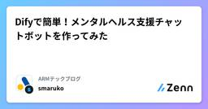
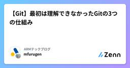
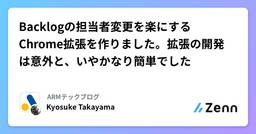
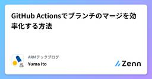

ARMテックブログのフィード
https://zenn.dev/p/arm_techblog
アドバンテッジリスクマネジメント(ARM)開発チームのテックブログです。 ARMの開発・運用にまつわる技術的な知見を投稿します。 主な技術スタックは、 Vue / Java / TypeScript / JavaScript / Python / AWS などです。
フィード

Difyで簡単！メンタルヘルス支援チャットボットを作ってみた🧠
ARMテックブログのフィード
はじめにこんにちは！アドバンテッジリスクマネジメント株式会社で働いている者です。弊社はメンタルヘルス・ウェルビーイング経営の支援を行っている会社で、日頃から従業員の心の健康について考える機会が多くあります。最近話題のDifyを使って、何か実用的なアプリが作れないかと思い、今回は日記形式で今日の出来事を入力すると、AIが励ましや前向きなメッセージを返してくれるメンタルヘルス支援チャットボットを作ってみました。結論から言うと、想像以上に簡単に作ることができました！ 作成したアプリの概要今回作成したのは、以下のような機能を持つチャットボットです。箇条書きで今日の...
1日前

【Git】最初は理解できなかったGitの3つの仕組み
ARMテックブログのフィード
Gitでバージョン管理、していますか？株式会社アドバンテッジリスクマネジメント 開発チームの古堅です。Gitといえばソースコードのバージョン管理システムですが、ずっと「Gitって便利だけど、よく分からないなー」と感じていました。Gitのことをもっと理解したい！という思いから、参考書籍を開き、特に内部でどのようなことをしているのかに関心を持って学びました。今回は、個人的に面白い！すごい！と感じた、Gitの基盤となっている3つの仕組みをご紹介します。なぜGitがこのような設計になっているのかを理解できれば、バージョン管理が今よりきっと楽しくなると思います。 Gitとは？G...
1日前

Backlogの担当者変更を楽にするChrome拡張を作りました。拡張の開発は意外と、いやかなり簡単でした
ARMテックブログのフィード
Backlogの担当者の変更操作を、キーボードショートカットでできるようにするChrome拡張を作りましたので紹介します。https://chromewebstore.google.com/detail/backlog-assign-helper/gfokkcegbkcdeejdahbgkdbhafjlbjen私が所属しているフィッツプラスでは、Backlogの運用ルールに「チケットの担当者欄は、ボールを持つ人に割り当てる」というものがあります。そのため頻繁に担当者の変更をするのですが、この操作をできるだけ簡単にしたくてこの拡張を作りました。コメントの記入はキーボードを使うので、そ...
4日前

GitHub Actionsでブランチのマージを効率化する方法
ARMテックブログのフィード
概要フィッツプラス システム開発部の伊藤です。今回の記事では、GitHub Actionsを使ってブランチのマージ作業を効率化する方法について紹介します。日頃の開発業務で発生するちょっとした手間を減らし、開発のスピードを上げるための工夫です。 Branch Mergerワークフローブランチのマージ作業を行うGitHub Actionsワークフローを「Branch Merger」と名付けました。このワークフローはGitHubのプルリクエスト内で下記のようにコメントすることで起動します。/merge <マージ先のブランチ名>上記のコメントをすると、プルリクエ...
5日前

エンジニアは名前にこだわろう！GitHub Actionsのジョブ名・ワークフロー名も大事です
ARMテックブログのフィード
こんにちは！皆さんはGitHub Actionsを使っていますか？ワークフローやジョブの名前はしっかり考慮して付けられているでしょうか。今回は、ジョブ名の付け方をちょっと見直してみたら思わぬところで助かった話をシェアします。些細な話ですが、意外と見落としがちなポイントかもしれません。 きっかけは自動マージの設定でしたフィッツプラスでは、依存関係の管理に Renovate を導入しています。ライブラリのアップデートにはなるべく追従する方針で、tflintなど一部のツールについてはCIが通れば自動マージするように設定しています。この自動マージの仕組みをより効率化するため、GitHu...
10日前
Devin Meetup Japan #2で学んだ企業導入の実践ポイント
ARMテックブログのフィード
こんにちはフィッツプラスの高山です。今日は、ARMテックブログよりお届けしています。ちょうど昨日ですかね、Devin Meetup Japan #2というイベントが開催されておりました。フィッツプラスでもDevinの活用を模索しており、また個人的にもDevinの利用を進めていて興味があったので気になっていたところ、イベントの動画が最速で公開されていたので早速視聴しました。貴重な情報を惜しみなく公開いただいて、とてもありがたいです。https://www.youtube.com/watch?v=hRqZN6YTLGA視聴を始めてすぐ気付いたのですが、Devinって去年の末に出たばっか...
18日前
【Obsidian】2年間の日報を分析して自己発見した6つの分析結果
ARMテックブログのフィード
こんにちは！ ✨株式会社アドバンテッジリスクマネジメントでフロントエンド開発を行なっているもろです。 はじめに〜400個ある日報をObsidian✖️生成AIで分析したい〜私は１日を通した学びや感想を日報として投稿しています。（部のルールとして日報の記載があるわけではなく、自分の意思で書いています。）Teamsに専用チャネルを作成し、DX開発部の方であれば誰でも見られるような形式をとっています。日報に対してリアクションやコメントをくれる方もいらっしゃるため、入社から2年以上続けることができており、投稿回数は400回以上にもなります！そんな日報活動ですが、最近流行りのノートツー...
19日前
Amazon Bedrock + GitHub Actions でClaude Codeを本格運用。複数リポジトリ対応の共通化も解説
ARMテックブログのフィード
フィッツプラスシステム開発部の高山です。話題のClaude Codeを、GitHub Actions上で直接活用できる環境を構築しました。フィッツプラスではすでにAmazon BedrockでClaudeをAPI利用できる体制が整っているため、これを活かしたセットアップに挑戦してみました。複数のリポジトリから共通のワークフローを呼び出せるようにする方法も含めて、手順をまとめています。同じようにAmazon Bedrockで課金を統一しつつ、GitHub ActionsでClaude Codeを使いたい方の参考になれば嬉しいです。 セットアップ手順 1. Bedrockでモデル...
19日前
SlackのRSSフィード活用術！障害情報と技術情報を効率的に収集しよう
ARMテックブログのフィード
SlackのRSS購読機能は、ニュースフィードのチェックなどに活用されている方も多いのではないでしょうか。私たちフィッツプラスでは、技術情報に加えてサードパーティサービスの障害情報をSlackに集約しており、これがなかなか気に入っているので紹介します。 サービス障害情報をRSSでキャッチ！迅速な把握のために利用している外部サービスが突然使えなくなる、といった経験は誰しもあるでしょう。多くの場合、XなどのSNSでリアルタイムな状況を確認できますが、長引く場合は特に公式のステータスを素早く確認できる体制は取りたいです。そこで役立つのが、各サービスが提供しているステータスページのRSS...
24日前
フィッツプラスのZennがはじまりました！
ARMテックブログのフィード
こんにちは！特定保健指導サービスを運営している株式会社フィッツプラスのシステム開発本部で、この度Zennをはじめます！フィッツプラスでは、私たちと関わる一人ひとりすべての人が、輝くように活き活きした「ウェルネスな暮らし」を送れる社会を創ることをVisionとしています。https://fitsplus.co.jp/2024年の9月に株式会社アドバンテッジリスクマネジメントの100%子会社となりましたご縁から、この度、親会社の ARMテックブログ に、私たちフィッツプラスも参加させてもらうことになりました！ところで「特定保健指導」とは何か、ご存じない方もいらっしゃるかもしれないので...
1ヶ月前
入社1年、リモート勤務で働いてみて感じた課題と工夫
ARMテックブログのフィード
こんにちは！株式会社アドバンテッジリスクマネジメントで社内システムの開発・保守に携わっている者です。 はじめに✍️新卒で入社してから1年が経ち、2年目がスタートしました。振り返ると、右も左もわからない中で、さまざまな業務に向き合いながら成長した1年だったと感じます。中でも特に印象的だったのが、リモートでの働き方です。弊社のエンジニアは基本的にリモート勤務が可能であり、私もその環境で日々の業務に取り組んできました。通勤時間がゼロであること、場所にとらわれず働ける自由さがある一方で、コミュニケーションやチーム連携、メリハリのつけ方の難しさなどを感じました。この記事では、そんなリ...
1ヶ月前
【JavaScript】forEachと非同期処理が噛み合わなかった話
ARMテックブログのフィード
株式会社アドバンテッジリスクマネジメント DX開発2部の古堅です。今回は、不具合の解消を通じて学んだ繰り返し処理と非同期処理の競合について書きます。 背景Vue.jsで実装したアプリのメニュー構造について、特定条件下で意図しない構造になるという不具合に遭遇しました。メニューリストを繰り返し処理（forEach）を用いて作成しており、その内部で非同期処理（async/await）をしていることが原因でしたが、なぜforEach内でasync/awaitがうまく機能しないのか、最初は理解できませんでした。本記事が、同様の事象に悩んでいる方（と未来の自分）にとって、参考になれば幸い...
2ヶ月前
【TDD】テスト駆動開発を活用した安全なリファクタリング！
ARMテックブログのフィード
はじめに ～既存コードの修正って怖い～こんにちは！ARMフロントエンド開発エンジニアの諸橋です！🦔私はARMの自社サービスの開発者として、新たな機能を開発しています。その際、既存のコードを修正することも多く、そのたびに「この修正で既存の処理に影響が出ないか心配だな...」という不安を感じることがあります。そのため、普段コードを修正したときは、「既存の処理が問題なく動作していること（リグレッション試験）」と「新たな機能が期待通り動作していること」の2つを確認しています。ただ、この方法だとコードを修正するたびに手間がかかり、開発効率が落ちてしまうことがあります。毎回画面を操作し...
3ヶ月前
開発で使ったGitコマンドの備忘録
ARMテックブログのフィード
株式会社アドバンテッジリスクマネジメントDX開発部の中島です。今回は、開発を通して学んだGitコマンドを自身への復習も兼ねて記事にしたいと思います。 背景普段の開発でよく使うGitですが、「こんなコマンドあったんだ！」と驚くこと、ありますよね。今回、開発リーダーに教えてもらった「知らなかったコマンド」をまとめてみました。今までは知らなくても開発は進められていたのですが、教えてもらったコマンドを使うことで、開発効率が上がりました。そんなコマンドを復習も兼ねて記事にしました。 Gitコマンド教えてもらったコマンドを以下にまとめました。本当はもっとたくさん教えてもらったんです...
3ヶ月前
ChatGPTの裏側を知る 〜生成AIの革新とその仕組み〜
ARMテックブログのフィード
はじめに株式会社アドバンテッジリスクマネジメント（ARM) DX開発部の清家です！近年、ChatGPTをはじめとする生成AIが爆発的な進化を遂げ、私たちの生活や仕事のスタイルを大きく変えています。本記事では、ChatGPTの裏側にある技術的要素を紐解きながら、その革新性について解説していきます。 生成AIとは？ 定義生成AIとは、テキストや画像などのコンテンツを生成するAIの総称です。従来のルールベースのシステムとは異なり、大量のデータを学習し、文脈に応じた自然な出力を生成できます。 応用例チャットボット：顧客対応やアシスタント自動翻訳：多言語間のスムー...
4ヶ月前
Vuexで実現するVue.jsアプリの効率的な状態管理
ARMテックブログのフィード
株式会社アドバンテッジリスクマネジメント DX開発部の古堅です。今回は、Vue.jsアプリケーションにおける状態管理の課題を解決する強力なライブラリ「Vuex」について紹介します。 背景私は半年前、Vuexを活用しているプロジェクトに参画することになりました。それまで状態管理ライブラリの利用経験がなかったため、この機会に体系的に学習しました。本記事では、実際のプロジェクト経験と調査内容をもとに、Vuexの基本概念から実装方法まで記載していきます。 参考公式ドキュメント：https://vuex.vuejs.org/ja/ Vuexとは Vuexとは、Vue.jsア...
4ヶ月前
【Git】コミットメッセージにPrefixをつけてわかりやすくしよう！
ARMテックブログのフィード
はじめにこんにちはARMフロントエンド開発エンジニアの諸橋です！今回は、開発をする上でコードに変更をしたときに利用する「コミットメッセージ」について、関連ツールとともに紹介します。コミットメッセージとは、コードの変更内容を他の方に伝えるために使われるものです。そのため、コミットメッセージは他の人が見てもわかりやすいように書くことが大切です。「コミットメッセージ？そんなの適当でいいでしょ。」と思ったそこのあなた。未来のあなた、そしてチームメイトがコミット履歴を見たとき、何を感じるでしょうか？「バグ修正」とだけ書かれたメッセージの山を見て、困惑する顔が目に浮かびます…。👻...
5ヶ月前
【社内勉強会】100回以上続く弊社勉強会の魅力と新卒のリアルな登壇体験記
ARMテックブログのフィード
はじめに株式会社アドバンテッジリスクマネジメント DX開発部では、週に1回のペースで座学形式の勉強会を開催しています。こちらの記事では、若手から部長クラス、他の部署の方まで参加している勉強会について新卒の自分が登壇したときの心情等も含めてお伝え出来たらと思います🙌!本記事は、以下の方向けです。・自社の勉強会のために他社の勉強会から学びや気づきを得たい方向け・弊社に興味をお持ちの方向け DX勉強会について ■概要参加者 ：希望参加（DXの開発関係部署の方、外部組織の方も声掛け可能） 開催場所：オンライン会議 目的 ：知識の共有化・スキル強化・相互理解も...
6ヶ月前
技術ブログ始めました！（アドバンテッジリスクマネジメント）
ARMテックブログのフィード
株式会社アドバンテッジリスクマネジメント DX開発部2年目の古堅です。この度、開発部の若手を中心として技術ブログを始めましたので、皆様への挨拶の意味を込めて経緯などを共有します🙌 私たちの会社について株式会社アドバンテッジリスクマネジメント（以降、ARM）は、「企業に未来基準の元気を！」というコーポレートメッセージのもと、メンタル不調の予防改善やエンゲージメント向上のためのサービス、休職者支援のサービスなどを提供しています。そのなかでDX開発部は、ARMがSaaSとして提供しているWebサービスの開発・運用を担当しています。サービス一覧はこちら▼https://www.a...
7ヶ月前
【第1回 DX勉強会ハッカソン】社員の誕生日を祝うAIカレンダーが誕生！
ARMテックブログのフィード
はじめにこんにちは！株式会社アドバンテッジリスクマネジメント DX開発部に所属している2年目の諸橋です2024年8月27日と8月28日の2日間、私たちの社内でDX勉強会を兼ねたハッカソンが開催されました🎉今回のハッカソンのテーマは 「AIをハックしよう！」 というもので、AI技術を活用することが目的でした。日常業務ではAI開発の機会が少ないため、とても新鮮で刺激的な経験となりました！この記事では、私が参加したBチームでのプロジェクト活動について、具体的にどのような内容に取り組んだのかを詳しくお伝えしたいと思います！ メンバー紹介本ハッカソンは A、B、C の3チ...
8ヶ月前